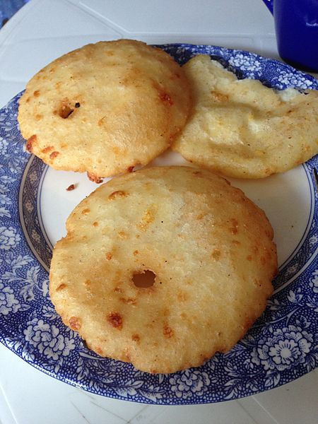

Arepas fritas
7/10/2018
Como venezolano no hay comida con la que me identifique más que las ¡arepas! Las arepas son el pan nuestro de cada día. Las comemos de desayuno, almuerzo y/o cena. Nunca pueden faltar en nuestra mesa. No solamente nos llenan el estómago, sino que también nos llenan el corazón de orgullo. Esta receta, que comparto con ustedes, me llena de orgullo doblemente, ya que fue la primera comida que preparé con mis propias manos, a muy temprana edad. Me acuerdo que mi mamá preparaba la masa y yo me encargaba de hacer las bolitas. Luego ella las freía. Las arepas no quedaban muy redonditas que se diga, ¡pero el sabor era lo importante!
La arepa es una especie de torta pequeña preparada de masa o harina de maíz, de forma circular aplanada, de unos diez a veinte centímetros de diámetro; que puede comerse sola (en Venezuela, sustituye muchas veces al pan), o rellena de un montón de cosas. Ahora mismo me vienen a la mente el perico (una especie de revuelto de huevos con tomate y cebolla), jamón y queso, carne desmechada en salsita, bufff, se me hace la boca agua. Tradicionalmente la arepa se hace horneada o asada, pero hoy la haremos frita.